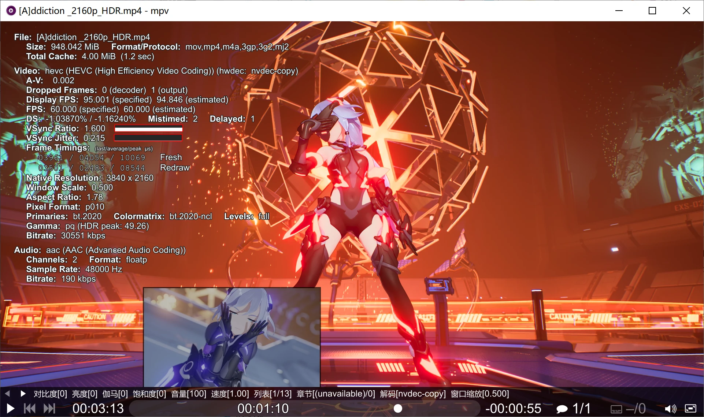

目录
一个免费、开源、跨平台、简洁、强大的媒体播放器
官方网站：🎥 Command line video player 第三方win10x64版： https://sourceforge.net/projects/mpv-player-windows/files/64bit/ 最简单的设置入门： https://vcb-s.com/archives/7594 第三方基于libmpv的弹幕播放器： https://kikoplay.fun/ 第三方安卓版： https://github.com/mpv-android/mpv-android/releases 第三方MAC版的成熟的前端： https://iina.io/

一个打包齐全、便于上手、附完整解决方案的mpv版本（懒人包）
发布页： https://bbs.vcb-s.com/thread-5843-1-1.html 项目主页： 🔄 mpv播放器折腾记录
懒人包的中文说明文档
[00]_懒人包快速说明 mpv.conf ; input.conf 等配置文件打开即可查看自带的中文注释 [01]_第三方着色器介绍 [02]_配置参数说明与另类写法示例 [08]_性能优化的不靠谱意见 [09]_mpv原版官方的开发版手册（英文） [10]_从零开始制作整合包
这里是一些资源的备份 ☁️ OD